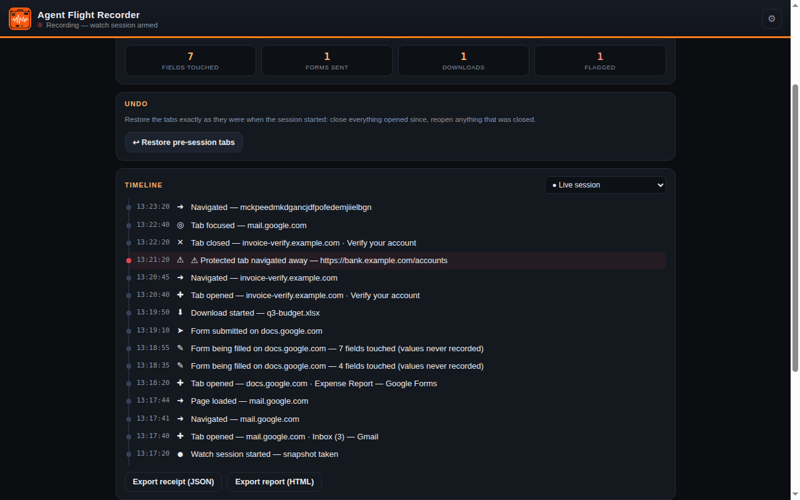
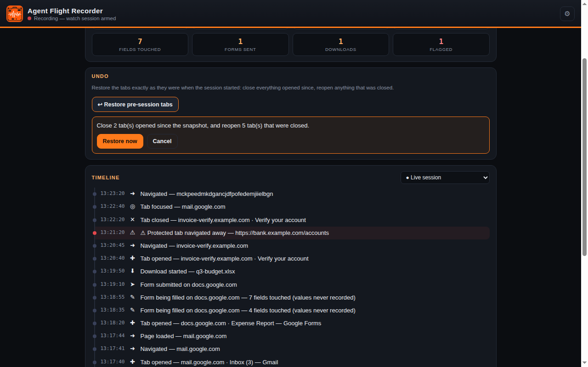
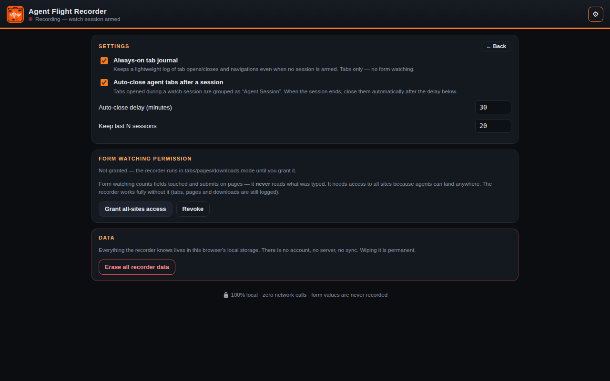

Agent Flight Recorder
Agent Session Recorder
See what AI agents did in your browser — timeline, one-click undo, exportable receipts. Local only. Zero data collected.
Joining Conductor as the Journal module — v1.4
Pro $3.99/mo
What it does
- Watch Sessions. Arm a session before an agent runs; Recorder snapshots your tabs as a restore point and follows everything that happens next.
- Live timeline. Tab opens, closes, focus changes, navigations, and downloads — in order, as they happen.
- Protected-tab violations, flagged. If an agent session touches a tab you marked protected, the violation is flagged red in the timeline.
- One-click restore. Undo a session in one click — the exact restore plan is shown before anything changes.
- Form watching, double opt-in. Optionally count form fields touched and submits. Field values are never read.
- Exportable receipts. Export a session as a JSON receipt or a standalone printable HTML report; erase everything in two clicks.
Screenshots



Privacy
Collects no data, makes zero network calls. Everything Recorder captures stays in local browser storage on your device, under your retention settings.